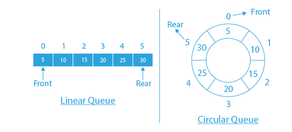
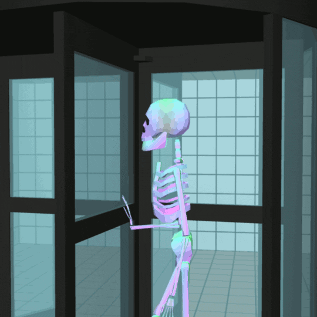
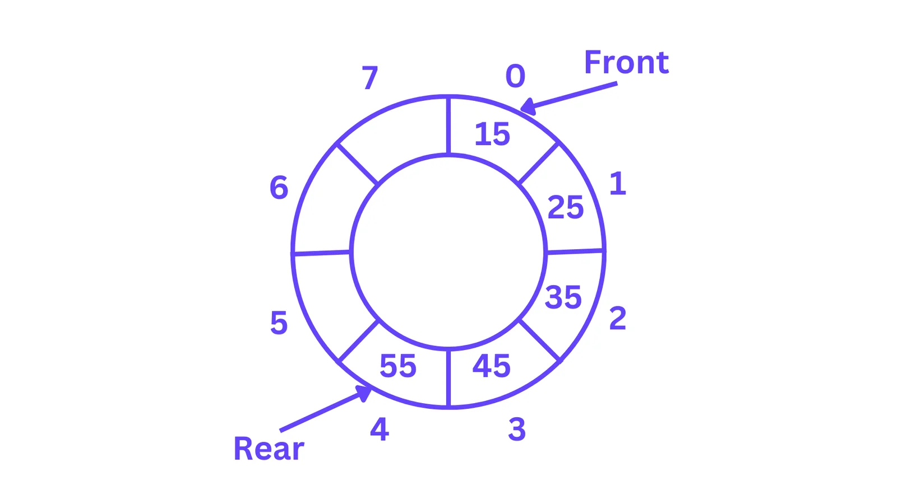
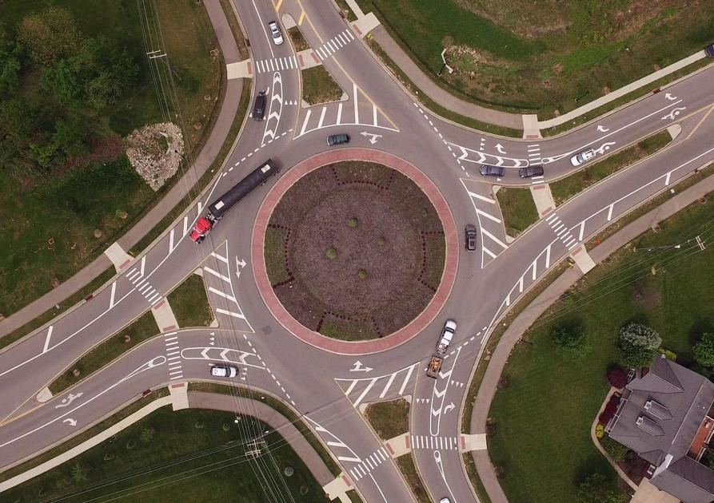

What is a Circular Queue?
A circular queue is a linear data structure that follows the First-In-First-Out (FIFO) principle, but unlike a regular queue, the last position is connected back to the first position, forming a circle. This makes it more efficient in utilizing memory by reusing the vacant spaces at the front.

Principle of Circular Queue:
The circular queue operates based on the FIFO (First-In-First-Out) principle, but with a circular connection. This means:
- The first element added to the queue will be the first one to be removed.
- The rear pointer wraps around to the front when it reaches the end of the queue, ensuring efficient use of space.
Example: Imagine a revolving door at an entrance. As people enter, they eventually come back to the starting point if space is not used optimally.
Understanding the Circular Queue Process
A circular queue is a structure used to store data with rules for adding and removing items: First In, First Out (FIFO). Let’s break down how a circular queue works.
- Circular Queue Structure:
A circular queue can be visualized as a circle where items are added at the rear and removed from the front. When the rear reaches the end, it wraps around to the beginning of the queue. - Front and Rear of the Circular Queue:
The front of the queue is where the first item is located and can be removed, while the rear is where new items are added. When the rear pointer reaches the end of the queue, it wraps back to the front if there is space.

Real-Time Examples of Circular Queue
Circular queues are frequently used in various real-world applications where efficient memory usage is required along with FIFO operations. Some examples include:
- CPU Scheduling: Operating systems use circular queues to schedule tasks in a time-sharing system.
- Memory Buffers: Circular buffers are used in streaming and networking for efficient data storage and processing.
- Traffic Management Systems: Circular queues manage traffic lights and vehicle rotations in a roundabout.
- Data Streaming: Circular buffers are used for continuous audio or video streaming without interruptions.
- Call Center Systems: Calls are queued in a circular manner, ensuring each caller gets attention even when the queue loops.
Key Operations of a Circular Queue:
- Enqueue: The operation used to add an item to the rear of the circular queue. If the rear reaches the end of the queue, it wraps around to the beginning, ensuring efficient use of available space.
- Dequeue: The operation used to remove the item from the front of the circular queue. Once an item is dequeued, the next item in line becomes the new front.
- Peek (or Front): The operation that allows you to view the item at the front of the circular queue without removing it.
- IsEmpty: A check that determines whether the circular queue has any items in it. This operation returns true if the queue is empty and false otherwise.
- IsFull: A check that determines whether the circular queue is full. In a circular queue, this occurs when the rear pointer wraps around and meets the front pointer.
- Size: The operation that returns the number of items currently in the circular queue.
A Real-World Example

A roundabout is a circular road where vehicles move around a central island in one direction. It helps control traffic flow at intersections without using traffic lights. Drivers enter the roundabout, go around the circle, and exit at their desired road. Vehicles already in the roundabout have the right of way.
- Enqueue: Add an element to the rear of the circular queue.
Example: Adding cars to a roundabout queue, filling up each available exit sequentially. - Dequeue: Remove the element at the front of the circular queue.
Example: A car exiting the roundabout from the current front position. - Peek/Front: View the element at the front of the circular queue without removing it.
Example: Checking which car is next to exit the roundabout. - IsEmpty: Check if the circular queue is empty.
Example: If there are no cars in the roundabout. - IsFull: Check if the circular queue is full (when all positions in the roundabout are occupied).
Example: The roundabout cannot take in more cars because all positions are filled.
Implementation of Circular Queue
A circular queue can be implemented in various ways, primarily using:
- Array: A fixed-size array can be used to store queue elements, where the rear wraps around to the beginning when the end of the array is reached.
- Usage: Efficient for known maximum size, with no wasted space due to wrapping behavior.
- Drawbacks: Managing the circular logic can be slightly more complex, and resizing requires extra handling.
- Linked List: A dynamic approach using nodes, where the rear node points to the front node, forming a circular structure. This allows seamless wrapping behavior.
- Usage: Flexible and dynamic, can grow or shrink as needed.
- Drawbacks: Slightly higher memory overhead and complexity due to managing node pointers and the circular link.
Comparison of Circular Queue Implementation: Array vs Linked List
| Aspect | Circular Queue Using Array | Circular Queue Using Linked List |
|---|---|---|
| Memory Allocation | Fixed size (must define size at the start). | Dynamic size (grows and shrinks as needed). |
| Space Efficiency | Efficient due to wrapping behavior, no unused space when implemented correctly. | More space-efficient but requires extra memory for pointers. |
| Overflow Condition | Occurs if the queue is full (front and rear pointers meet with no free space). | No overflow unless system memory is exhausted. |
| Underflow Condition | Occurs if the queue is empty when trying to dequeue an element. | Occurs if the queue is empty when trying to dequeue an element. |
| Time Complexity for Enqueue | O(1), wrapping ensures efficient addition at the rear. | O(1), a new node is added at the rear with proper linking. |
| Time Complexity for Dequeue | O(1), removing the front element and updating the pointer. | O(1), removing the front node and updating the link. |
| Time Complexity for Peek | O(1), accessing the front element directly. | O(1), accessing the front node directly. |
| Resize Operations | Requires resizing when the queue exceeds the initial capacity. | No need for resizing, dynamically adjusts size by adding or removing nodes. |
| Memory Overhead | Minimal overhead since only the array itself is stored. | Higher memory overhead because each node needs extra memory for the pointer. |
| Implementation Simplicity | More complex than a simple queue, requiring wrapping logic for pointers. | Requires additional handling of circular links, slightly more complex. |
| Random Access | Allows random access to elements via index, though not typical in circular queue operations. | No random access, traversal needed to access middle elements. |
| Cache Efficiency | Better cache performance due to contiguous memory allocation. | Poorer cache performance since nodes are scattered in memory. |
| Flexibility | Fixed size unless resized dynamically, which requires extra handling. | Fully flexible, grows/shrinks automatically with operations. |
| Best Suited For | When the maximum size is known and memory usage must be efficient. | When the number of elements frequently changes or is unknown. |
Implementing a Circular Queue Using an Array
A circular queue is an advanced version of a queue that overcomes the limitation of the array-based queue by efficiently utilizing memory. Unlike a linear queue, it uses a circular increment to manage the front and rear pointers, wrapping around when necessary. We'll implement four main operations: enqueue (to add an item), dequeue (to remove an item), peek (to check the front item), and isEmpty (to check if the queue is empty). Additionally, we'll handle conditions for a full or empty queue.
Step-by-Step Approach:
- Initialize an array to represent the queue, with
frontandrearindices. - Ensure circular movement of
frontandrearusing modulo operation (%). - Implement enqueue, dequeue, peek, and isEmpty operations, ensuring proper handling of queue conditions.
Combined Circular Queue Operations Algorithm
- Initialize the circular queue with a specified capacity.
- For enqueue: Check if the queue is full. If not, increment the
rearin a circular manner and add the item at the rear. - For dequeue: Check if the queue is empty. If not, return the item at the
frontand increment thefrontin a circular manner. - For peek: Check if the queue is empty. If not, return the item at the
front. - For isEmpty: Check if
sizeis zero; if yes, return true; otherwise, return false.
Implementation Example
Here is a simple C program to demonstrate the array implementation of a circular queue:
#include <limits.h>
#include <stdio.h>
#include <stdlib.h>
// Structure to represent a circular queue
struct CircularQueue {
int front, rear, size;
unsigned capacity;
int* array;
};
// Function to create a circular queue of given capacity
struct CircularQueue* createCircularQueue(unsigned capacity) {
struct CircularQueue* queue = (struct CircularQueue*)malloc(sizeof(struct CircularQueue));
queue->capacity = capacity;
queue->front = queue->size = 0;
queue->rear = capacity - 1; // rear starts at the end
queue->array = (int*)malloc(queue->capacity * sizeof(int));
return queue;
}
// Enqueue operation
void enqueue(struct CircularQueue* queue, int item) {
if (queue->size == queue->capacity) return; // Check if queue is full
queue->rear = (queue->rear + 1) % queue->capacity; // Circular increment
queue->array[queue->rear] = item;
queue->size++;
printf("%d enqueued to queue\n", item);
}
// Dequeue operation
int dequeue(struct CircularQueue* queue) {
if (queue->size == 0) return INT_MIN; // Check if queue is empty
int item = queue->array[queue->front];
queue->front = (queue->front + 1) % queue->capacity; // Circular increment
queue->size--;
return item;
}
// Peek operation
int peek(struct CircularQueue* queue) {
if (queue->size == 0) return INT_MIN; // Check if queue is empty
return queue->array[queue->front];
}
// isEmpty operation
int isEmpty(struct CircularQueue* queue) {
return (queue->size == 0); // Return true if queue is empty
}
// Main function to test the circular queue operations
int main() {
struct CircularQueue* queue = createCircularQueue(5); // Create a circular queue of capacity 5
enqueue(queue, 10);
enqueue(queue, 20);
enqueue(queue, 30);
printf("%d dequeued from queue\n", dequeue(queue)); // Dequeue item from queue
enqueue(queue, 40);
enqueue(queue, 50);
enqueue(queue, 60); // Should wrap around
printf("Front item is %d\n", peek(queue));
return 0;
}
Output
10 enqueued to queue
20 enqueued to queue
30 enqueued to queue
10 dequeued from queue
40 enqueued to queue
50 enqueued to queue
60 enqueued to queue
Front item is 20
Click here for Online compiler
Code Explanation:
- Similar to a regular queue, except the
frontandrearwrap around using modulo operations (%).
Complexity Analysis:
Time Complexity:
- Enqueue: O(1)
- Dequeue: O(1)
- Peek: O(1)
- isEmpty: O(1)
Auxiliary Space: O(n) (where n is the capacity of the circular queue).
Implementing a Circular Queue Using a Singly Linked List
A circular queue is a type of queue where the last element points back to the first element, creating a circular structure. This avoids the problem of a queue becoming "full" even when there is space, as in a linear queue. The front and rear pointers move in a circular manner when adding or removing elements.
The main advantage of using a linked list for a circular queue is that it provides dynamic memory allocation while ensuring that the queue can be filled and emptied in a circular fashion, making efficient use of available memory.
Circular Queue Operations
- enqueue(): Insert a new element at the rear of the queue, updating the rear pointer in a circular manner.
- dequeue(): Remove and return the front element of the queue, adjusting the front pointer.
- peek(): Return the front element without removing it.
- display(): Print all elements in the queue in a circular order.
Operations and their Algorithms:
1. Initialize Queue: Create an empty queue with front and rear pointers set to null.
2. Enqueue Operation:
a) Create a new node.
b) Set the node's data to the given value.
c) If the queue is empty, set both front and rear pointers to the new node.
d) If not empty, link the new node to the current rear node, and update the rear pointer. The rear node will link to the front node to maintain the circular structure.
3. Dequeue Operation:
a) Check if the queue is empty. If empty, return an underflow message.
b) Use a temporary pointer to store the front node.
c) Move the front pointer to the next node. If the queue becomes empty, set both front and rear to null.
d) Free the memory of the temporary node.
4. Peek Operation:
a) Check if the queue is empty. If empty, return an error.
b) Otherwise, return the data of the front node.
5. Display Operation:
a) Initialize a temporary pointer to the front of the queue.
b) Traverse the queue using the temporary pointer until it reaches the front node again.
c) Print the data of each node during traversal.
Time Complexity: O(1) for enqueue and dequeue operations.
Space Complexity: O(N) where N is the number of elements in the queue.
Implementation Code
// C program to implement a circular queue using singly linked list
#include <limits.h>
#include <stdio.h>
#include <stdlib.h>
// Struct representing a node in the linked list
typedef struct Node {
int data;
struct Node* next;
} Node;
Node* createNode(int new_data) {
Node* new_node = (Node*)malloc(sizeof(Node));
new_node->data = new_data;
new_node->next = NULL;
return new_node;
}
// Struct to implement circular queue using a singly linked list
typedef struct Queue {
Node* front;
Node* rear;
} Queue;
// Constructor to initialize the queue
void initializeQueue(Queue* queue) {
queue->front = queue->rear = NULL;
}
// Function to check if the queue is empty
int isEmpty(Queue* queue) {
return queue->front == NULL; // If front is NULL, the queue is empty
}
// Function to enqueue an element onto the queue
void enqueue(Queue* queue, int new_data) {
Node* new_node = createNode(new_data);
if (!new_node) {
printf("\nQueue Overflow");
return;
}
if (queue->rear == NULL) { // If the queue is empty
queue->front = queue->rear = new_node;
new_node->next = queue->front; // Make the queue circular
} else {
queue->rear->next = new_node; // Link the new node to the current rear
queue->rear = new_node; // Update the rear to the new node
queue->rear->next = queue->front; // Rear points to front to maintain the circular structure
}
}
// Function to remove the front element from the queue
void dequeue(Queue* queue) {
if (isEmpty(queue)) {
printf("\nQueue Underflow\n");
return;
} else {
Node* temp = queue->front; // Assign current front to a temporary variable
if (queue->front == queue->rear) { // If there is only one element
queue->front = queue->rear = NULL; // Make the queue empty
} else {
queue->front = queue->front->next; // Update front to the next node
queue->rear->next = queue->front; // Update rear to point to the new front
}
free(temp); // Deallocate memory of the old front node
}
}
// Function to return the front element of the queue
int peek(Queue* queue) {
if (!isEmpty(queue))
return queue->front->data; // Return front element if queue is not empty
else {
printf("\nQueue is empty");
return INT_MIN; // Return a sentinel value if queue is empty
}
}
// Driver program to test the circular queue implementation
int main() {
Queue queue;
initializeQueue(&queue);
// Enqueue elements onto the queue
enqueue(&queue, 11);
enqueue(&queue, 22);
enqueue(&queue, 33);
enqueue(&queue, 44);
// Print front element of the queue
printf("Front element is %d\n", peek(&queue));
// Remove two elements from the front
printf("Removing two elements...\n");
dequeue(&queue);
dequeue(&queue);
// Print front element of the queue
printf("Front element is %d\n", peek(&queue));
return 0;
}
Output
Front element is 11
Front element is 33
Complexity Analysis
Time Complexity:
O(1) for enqueue and dequeue operations as we do not traverse the list; operations are performed using the current pointer.
Auxiliary Space:
O(N), where N is the size of the queue.
Summary
In this implementation, we define a Node struct to represent each node in the linked list and a Queue struct that utilizes this node struct to implement the circular queue. The front and rear attributes of the Queue struct point to the first and last nodes of the queue, respectively, with the rear node pointing to the front to form a circular structure.
To add an item to the queue, we create a new node with the specified item, link it as the next node after the current rear, and update the rear to the new node, ensuring the circular structure by linking the rear to the front.
To remove an item from the queue, we update the front of the queue to the next node and return the data from the original front node. If the queue becomes empty, we set both front and rear to null.
Benefits of Using a Circular Queue
- Efficient use of memory by reusing space as elements are dequeued.
- No need to shift elements like in a regular queue, resulting in faster operations.
Circular Queue Variants
1. Simple Circular Queue
Definition: A basic circular queue that follows the First-In-First-Out (FIFO) principle, with its end connected back to the front to reuse space.
Principle: The first element added is the first one to be removed, but the queue wraps around when it reaches its end.
Operations: Enqueue, Dequeue, Front, isEmpty, isFull.
2. Circular Queue
Definition: A queue where the end of the queue is connected back to the front, making efficient use of space.
Principle: Once the queue is full, the next enqueue operation starts from the beginning.
Operations: Enqueue, Dequeue, Front, isEmpty.
3. Deque (Circular Double-ended Queue)
Definition: A circular queue where elements can be added and removed from both ends.
Principle: Supports both FIFO and LIFO operations in a circular structure.
Operations: EnqueueFront, EnqueueBack, DequeueFront, DequeueBack, isEmpty.
4. Priority Circular Queue
Definition: A circular queue where elements are dequeued based on priority rather than the order they were added.
Principle: Elements with higher priority are dequeued before those with lower priority, while maintaining circular nature.
Operations: Enqueue (with priority), Dequeue, Front, isEmpty.
5. Multi-Circular Queue
Definition: A collection of multiple circular queues within a single data structure.
Principle: Efficiently manages more than one circular queue simultaneously.
Operations: Enqueue, Dequeue for each queue, isEmpty for each queue.
6. Blocking Circular Queue
Definition: A circular queue that blocks threads attempting to dequeue from an empty queue or enqueue to a full queue.
Principle: Useful in multi-threaded environments to manage access and prevent race conditions.
Operations: Enqueue, Dequeue, isEmpty, isFull.
7. Fixed-size Circular Queue
Definition: A circular queue with a fixed size, implemented using arrays, where the capacity is predetermined.
Principle: Operations are limited by the queue's size, and overflow occurs if full.
Operations: Enqueue, Dequeue, Front, isEmpty, isFull.
8. Concurrent Circular Queue
Definition: A circular queue designed for concurrent operations in multi-threaded environments.
Principle: Ensures safe access by multiple threads without data corruption in a circular structure.
Operations: Enqueue, Dequeue, Front, isEmpty, thread-safe operations.
9. Immutable Circular Queue
Definition: A circular queue variant where every operation creates a new version, ensuring immutability.
Principle: Maintains immutability, useful in functional programming with circular queues.
Operations: Enqueue, Dequeue, Front, versioning functions.
10. Two Circular Queues in One Array
Definition: Two circular queues share a single array, growing from opposite ends, to optimize space usage.
Principle: Maximizes space utilization by allowing two circular queues to coexist in one array.
Operations: Enqueue, Dequeue for each queue, isEmpty for each queue.
Circular Queue Overflow and Underflow
Circular Queue Overflow
Definition: Circular queue overflow occurs when you try to add more items to a circular queue than it can hold, even when there is space available in the queue due to its circular nature.
Example: Imagine a circular queue at a ticket counter. When the queue is full, the rear pointer has wrapped around and is pointing to the front element. If you attempt to add a new person to the queue, but there is no space left, this causes a situation called circular queue overflow. In programming, this results in a queue overflow error when you try to add an item when the queue is full, even though it may appear to have space because of its circular structure.
Circular Queue Underflow
Definition: Circular queue underflow occurs when you try to remove an item from a circular queue that is empty.
Example: Using the same ticket counter analogy, imagine that the queue is empty and you try to remove a person. Since there are no people in the queue, this causes an error known as circular queue underflow. In programming, this happens when you attempt a dequeue operation on an empty queue, resulting in an underflow error.
Summary
- Circular Queue Overflow: Trying to add items to a circular queue when it is full.
- Circular Queue Underflow: Trying to remove items from a circular queue when it is empty.